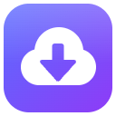

for Google Drive™ · Google Drive™ için
Privacy Policy – Save to Drive Pro
Effective date: 27 November 2026
Save to Drive Pro – for Google Drive™ ("the extension") is a Chrome extension that saves web pages, images and files to your own Google Drive. This policy explains what the extension accesses, where that data goes and how you stay in control.
In short: the extension has no server. Nothing you save is sent to us. Data goes only from your browser to your own Google Drive (and to the website you download a file from). There is no analytics, tracking or advertising. If you buy Pro or Pro+, your purchase and license key are handled by Polar, our payment provider.
This extension is not made by Google and is not affiliated with Google. Google Drive is a trademark of Google LLC.
1. What the extension accesses, and when
The extension only acts when you ask it to: when you click Save in its popup, choose one of its right-click menu items or press one of its keyboard shortcuts.
| Data | When | Why |
|---|---|---|
| Content of the current tab (screenshot, printed PDF, MHTML archive or page text/HTML) | Only after you save that tab | To create the file you asked for |
| An image or linked file you right-click | Only after you choose "Save image/linked file to Drive" | To download that one file and upload it to your Drive |
| The web pages open in the current window (Pro, "Save all tabs") | Only after you click "Save all tabs" | To save each of them, exactly like a single save |
| The email open in Gmail (Pro, "Email (PDF)") | Only after you save that email | The extension reads the conversation's ID and subject from the Gmail tab and opens Gmail's own print view of it in a temporary tab to create the PDF |
| Your Google account's name and email address | When the popup or settings page is open | Shown as "Connected as …" so you know which Drive is used |
| Google access tokens | Managed by Chrome (chrome.identity); for extra Google accounts (Pro+) kept in memory only | To call the Google Drive API on your behalf |
| Your license key (Pro/Pro+) | When you enter it, and about once a week | To check that the license is valid (see section 2) |
The extension does not read your browsing history, does not monitor the pages you visit and does not access any tab you did not choose to save.
2. Where the data goes
- Google Drive API (
www.googleapis.com) – the files you save are uploaded to your Google Drive. For the "Google Doc" format and as a fallback for PDF, the page HTML is uploaded to your Drive and converted by Google. - Google sign-in (
accounts.google.com,oauth2.googleapis.com) – to sign in extra Google accounts (Pro+) in Google's own sign-in window, and to revoke access when you disconnect or remove an account. - The website of a file you right-click – to download that file. Your browser's cookies for that site are sent, as with a normal download, so files behind your login on that site still work.
- Gmail (
mail.google.com, Pro) – when you save an email, Gmail's print view of that conversation is loaded in your browser with your existing Gmail session. The email goes only to your Google Drive. - Folder picker page (
kadirshn.github.io, Pro+) – when you click "Choose from Drive", our static web page (no server, nothing stored) shows Google's folder picker (apis.google.com,docs.google.com). The extension gives that page your Google access token in the part of the address that is never sent to any server; the page returns only the ID of the folder you choose. - Polar (
api.polar.sh, Pro/Pro+) – to activate and check your license key. The extension sends the license key, our public organization ID, an activation ID and a device label such as "Chrome · Windows · 2026-11-27". No page content, files or browsing data are ever sent.
Nothing else is sent to the developer or to any other third party. The developer cannot see your files or your data.
Purchases (Pro and Pro+)
Payments are handled by Polar (polar.sh), the merchant of record, on Polar's own checkout pages. Polar processes your payment details under its own privacy policy; the developer never sees your card details. Polar shares with the developer what is needed to deliver and support your license: your email address, country, the product you bought and the order details. They are used only for that, and for refunds and support requests.
3. Google Drive access (limited)
The extension requests only the Google permission drive.file. With it, the extension can only see and change files and folders that it created itself (for example the "Save to Drive" folder and what you saved into it), and folders you chose yourself with Google's folder picker (Pro+), including folders in shared drives. It cannot see the rest of your Google Drive.
Save to Drive Pro's use and transfer of information received from Google APIs will adhere to the Google API Services User Data Policy, including the Limited Use requirements. Data from Google APIs is used only to provide the saving features you see in the extension. It is not sold, not used for advertising, not used to train AI models and not transferred to anyone.
4. What is stored in your browser
Using Chrome's extension storage, on your device only:
- your settings: default format and file name template (Chrome may sync these between your own devices if Chrome sync is turned on);
- for each Google account: the ID and name of the default folder, recently used folders, folders you chose from Drive and the ID of the extension's Drive folder;
- Pro/Pro+: your license key and its state; the save history (at most 500 entries: file name, Drive link, folder, the address and title of the saved page, the date and, for extra accounts, the account's email); your site rules; the list of extra Google accounts you added (email and name).
Access tokens of extra Google accounts are kept only in memory and are gone when the browser closes. No page content, files or screenshots are stored by the extension. You can clear the history and remove rules, accounts and the license at any time in the extension.
5. Permissions
| Permission | Purpose |
|---|---|
identity | Sign in with Google to access your Drive (scope drive.file only), also for extra accounts and the folder picker window (Pro+). |
activeTab, scripting | Read the tab you chose to save, only after your action (also the open Gmail conversation's ID and subject). |
debugger | Create a real PDF and full-page screenshots with Chrome's own engine (Page.printToPDF, Page.captureScreenshot). Attached to the chosen tab, or to a temporary tab with Gmail's print view, for a moment only. |
pageCapture | Save the chosen page as an MHTML web archive. |
contextMenus | The right-click "Save … to Drive" items. |
notifications | "Saved to Drive" and error notifications. |
storage | Your settings and the data in section 4. |
| Access to all websites (optional) | Asked only the first time you right-click save an image or file, or click "Save all tabs" (Pro). Used to download that file, or to save the other tabs of the window. You can remove it in the settings page. |
6. Your control
- Disconnect in the extension popup revokes the extension's access to your Google account; removing an extra account (Pro+) revokes its access too. You can also remove access at https://myaccount.google.com/permissions.
- Settings → Save to Drive Pro → Remove from this device removes your license key from the browser and frees the device at Polar. Your orders and license keys are also in Polar's customer portal.
- History → Clear history deletes the save history.
- Removing the extension deletes all its stored data. Files you saved stay in your Google Drive; you can delete them there at any time.
7. Children
The extension is not directed at children under 13 and does not knowingly process their data.
8. Changes
If this policy changes, the new version will be published at the same address with a new effective date. Significant changes will also be mentioned in the extension's store listing.
9. Contact
Questions or requests: kadselbur1@gmail.com
Gizlilik Politikası – Save to Drive Pro
Yürürlük tarihi: 27 Kasım 2026
Save to Drive Pro – Google Drive™ için ("eklenti"), web sayfalarını, resimleri ve dosyaları kendi Google Drive'ınıza kaydeden bir Chrome eklentisidir. Bu politika, eklentinin nelere eriştiğini, bu verilerin nereye gittiğini ve kontrolün nasıl sizde kaldığını açıklar.
Kısaca: Eklentinin bir sunucusu yoktur. Kaydettiğiniz hiçbir şey bize gönderilmez. Veriler yalnızca tarayıcınızdan kendi Google Drive'ınıza (ve dosya indirdiğiniz web sitesine) gider. Analiz, takip veya reklam yoktur. Pro veya Pro+ satın alırsanız satın alma ve lisans anahtarınız ödeme sağlayıcımız Polar tarafından yönetilir.
Bu eklenti Google tarafından yapılmamıştır ve Google ile bağlantılı değildir. Google Drive, Google LLC'nin ticari markasıdır.
1. Eklentinin eriştiği veriler ve ne zaman eriştiği
Eklenti yalnızca siz istediğinizde çalışır: popup'ta Kaydet'e tıkladığınızda, sağ tık menüsündeki öğelerinden birini seçtiğinizde veya klavye kısayollarından birine bastığınızda.
| Veri | Ne zaman | Neden |
|---|---|---|
| Açık sekmenin içeriği (ekran görüntüsü, PDF, MHTML arşivi veya sayfa metni/HTML'i) | Yalnızca o sekmeyi kaydettiğinizde | İstediğiniz dosyayı oluşturmak için |
| Sağ tıkladığınız resim veya linkteki dosya | Yalnızca "Drive'a kaydet" öğesini seçtikten sonra | O tek dosyayı indirip Drive'ınıza yüklemek için |
| Açık penceredeki web sayfaları (Pro, "Tüm sekmeleri kaydet") | Yalnızca "Tüm sekmeleri kaydet"e tıkladığınızda | Her birini, tek tek kaydetmedeki gibi kaydetmek için |
| Gmail'de açık e-posta (Pro, "E-posta (PDF)") | Yalnızca o e-postayı kaydettiğinizde | Eklenti Gmail sekmesinden yazışmanın kimliğini ve konusunu okur, PDF'i oluşturmak için Gmail'in kendi yazdırma görünümünü geçici bir sekmede açar |
| Google hesabınızın adı ve e-posta adresi | Popup veya ayarlar sayfası açıkken | Hangi Drive'ın kullanıldığını bilmeniz için "Bağlı hesap …" olarak gösterilir |
| Google erişim anahtarları (token) | Chrome tarafından yönetilir (chrome.identity); ek Google hesaplarında (Pro+) yalnızca bellekte tutulur | Sizin adınıza Google Drive API'yi çağırmak için |
| Lisans anahtarınız (Pro/Pro+) | Girdiğinizde ve yaklaşık haftada bir | Lisansın geçerli olduğunu kontrol etmek için (bkz. 2. bölüm) |
Eklenti tarama geçmişinizi okumaz, ziyaret ettiğiniz sayfaları izlemez ve kaydetmeyi seçmediğiniz hiçbir sekmeye erişmez.
2. Veriler nereye gider
- Google Drive API (
www.googleapis.com) – kaydettiğiniz dosyalar Google Drive'ınıza yüklenir. "Google Doc" biçiminde ve PDF için yedek yöntemde sayfanın HTML'i Drive'ınıza yüklenir ve Google tarafından dönüştürülür. - Google oturum açma (
accounts.google.com,oauth2.googleapis.com) – ek Google hesaplarını (Pro+) Google'ın kendi oturum penceresinde bağlamak ve bağlantıyı kestiğinizde ya da bir hesabı kaldırdığınızda erişimi iptal etmek için. - Sağ tıkladığınız dosyanın web sitesi – o dosyayı indirmek için. Normal bir indirmede olduğu gibi tarayıcınızın o siteye ait çerezleri gönderilir; böylece o sitede oturum açarak görebildiğiniz dosyalar da kaydedilebilir.
- Gmail (
mail.google.com, Pro) – bir e-postayı kaydettiğinizde o yazışmanın Gmail yazdırma görünümü, mevcut Gmail oturumunuzla tarayıcınızda yüklenir. E-posta yalnızca Google Drive'ınıza gider. - Klasör seçici sayfası (
kadirshn.github.io, Pro+) – "Drive'dan seç"e tıkladığınızda sabit web sayfamız (sunucu yok, hiçbir şey saklanmaz) Google'ın klasör seçicisini (apis.google.com,docs.google.com) gösterir. Eklenti Google erişim anahtarınızı bu sayfaya, adresin hiçbir sunucuya gönderilmeyen kısmında verir; sayfa yalnızca seçtiğiniz klasörün kimliğini geri verir. - Polar (
api.polar.sh, Pro/Pro+) – lisans anahtarınızı etkinleştirmek ve kontrol etmek için. Eklenti lisans anahtarını, herkese açık organizasyon kimliğimizi, bir etkinleştirme kimliğini ve "Chrome · Windows · 2026-11-27" gibi bir cihaz etiketini gönderir. Sayfa içeriği, dosya veya tarama verisi asla gönderilmez.
Bunların dışında geliştiriciye veya başka bir üçüncü tarafa hiçbir şey gönderilmez. Geliştirici dosyalarınızı veya verilerinizi göremez.
Satın almalar (Pro ve Pro+)
Ödemeler, satıcı sıfatıyla (merchant of record) Polar (polar.sh) tarafından, Polar'ın kendi ödeme sayfalarında alınır. Ödeme bilgileriniz Polar'ın kendi gizlilik politikasına göre işlenir; geliştirici kart bilgilerinizi asla görmez. Polar, lisansınızı sağlamak ve destek vermek için gerekenleri geliştiriciyle paylaşır: e-posta adresiniz, ülkeniz, satın aldığınız ürün ve sipariş bilgileri. Bunlar yalnızca bu amaçla ve iade/destek talepleri için kullanılır.
3. Google Drive erişimi (sınırlı)
Eklenti Google'dan yalnızca drive.file iznini ister. Bu izinle eklenti yalnızca kendi oluşturduğu dosya ve klasörleri (örneğin "Save to Drive" klasörü ve içine kaydettikleriniz) ve Google'ın klasör seçicisiyle sizin seçtiğiniz klasörleri (Pro+, Ortak Drive'lardakiler dahil) görebilir ve değiştirebilir. Google Drive'ınızın geri kalanını göremez.
Save to Drive Pro'nun Google API'lerinden aldığı bilgileri kullanması ve aktarması, Google API Hizmetleri Kullanıcı Verileri Politikası'na (Sınırlı Kullanım şartları dahil) uygundur. Google API'lerinden gelen veriler yalnızca eklentide gördüğünüz kaydetme özelliklerini sağlamak için kullanılır; satılmaz, reklam için kullanılmaz, yapay zekâ modellerini eğitmek için kullanılmaz ve kimseye aktarılmaz.
4. Tarayıcınızda saklananlar
Chrome'un eklenti depolama alanında, yalnızca cihazınızda:
- ayarlarınız: varsayılan biçim ve dosya adı şablonu (Chrome senkronizasyonu açıksa Chrome bunları kendi cihazlarınız arasında eşitleyebilir);
- her Google hesabı için: varsayılan klasörün kimliği ve adı, son kullanılan klasörler, Drive'dan seçtiğiniz klasörler ve eklentinin Drive klasörünün kimliği;
- Pro/Pro+: lisans anahtarınız ve durumu; kayıt geçmişi (en fazla 500 kayıt: dosya adı, Drive linki, klasör, kaydedilen sayfanın adresi ve başlığı, tarih ve ek hesaplarda hesabın e-postası); site kurallarınız; eklediğiniz ek Google hesaplarının listesi (e-posta ve ad).
Ek Google hesaplarının erişim anahtarları yalnızca bellekte tutulur ve tarayıcı kapanınca silinir. Eklenti sayfa içeriği, dosya veya ekran görüntüsü saklamaz. Geçmişi, kuralları, hesapları ve lisansı istediğiniz zaman eklentiden silebilirsiniz.
5. İzinler
| İzin | Amaç |
|---|---|
identity | Drive'ınıza erişmek için Google ile oturum açma (yalnızca drive.file kapsamı); ek hesaplar ve klasör seçici penceresi için de (Pro+). |
activeTab, scripting | Kaydetmeyi seçtiğiniz sekmeyi yalnızca sizin işleminizden sonra okumak (açık Gmail yazışmasının kimliği ve konusu dahil). |
debugger | Chrome'un kendi motoruyla gerçek PDF ve tam sayfa ekran görüntüsü oluşturmak (Page.printToPDF, Page.captureScreenshot). Seçilen sekmeye ya da Gmail yazdırma görünümünün açıldığı geçici sekmeye yalnızca kısa bir süre bağlanır. |
pageCapture | Seçilen sayfayı MHTML web arşivi olarak kaydetmek. |
contextMenus | Sağ tıktaki "… Drive'a kaydet" öğeleri. |
notifications | "Drive'a kaydedildi" ve hata bildirimleri. |
storage | Ayarlarınız ve 4. bölümdeki veriler. |
| Tüm web sitelerine erişim (isteğe bağlı) | Yalnızca sağ tıkla ilk kez resim veya dosya kaydettiğinizde ya da "Tüm sekmeleri kaydet"e (Pro) tıkladığınızda sorulur. O dosyayı indirmek veya penceredeki diğer sekmeleri kaydetmek için kullanılır. Ayarlar sayfasından kaldırabilirsiniz. |
6. Kontrol sizde
- Eklenti popup'ındaki Bağlantıyı kes, eklentinin Google hesabınıza erişimini iptal eder; bir ek hesabı (Pro+) kaldırmak da onun erişimini iptal eder. Erişimi https://myaccount.google.com/permissions adresinden de kaldırabilirsiniz.
- Ayarlar → Save to Drive Pro → Bu cihazdan kaldır, lisans anahtarınızı tarayıcıdan siler ve Polar'daki cihaz hakkını boşaltır. Siparişleriniz ve lisans anahtarlarınız Polar müşteri portalında da bulunur.
- Geçmiş → Geçmişi temizle kayıt geçmişini siler.
- Eklentiyi kaldırmak saklanan bütün verilerini siler. Kaydettiğiniz dosyalar Google Drive'ınızda kalır; onları istediğiniz zaman oradan silebilirsiniz.
7. Çocuklar
Eklenti 13 yaşından küçük çocuklara yönelik değildir ve bilerek onların verilerini işlemez.
8. Değişiklikler
Bu politika değişirse yeni sürüm aynı adreste, yeni bir yürürlük tarihiyle yayınlanır. Önemli değişiklikler eklentinin mağaza sayfasında da belirtilir.
9. İletişim
Sorular ve talepler için: kadselbur1@gmail.com